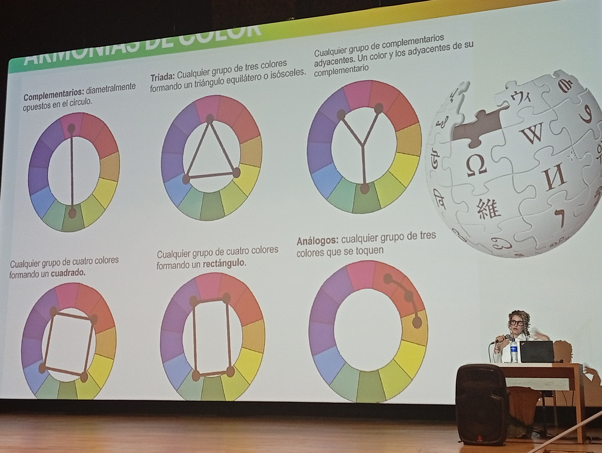
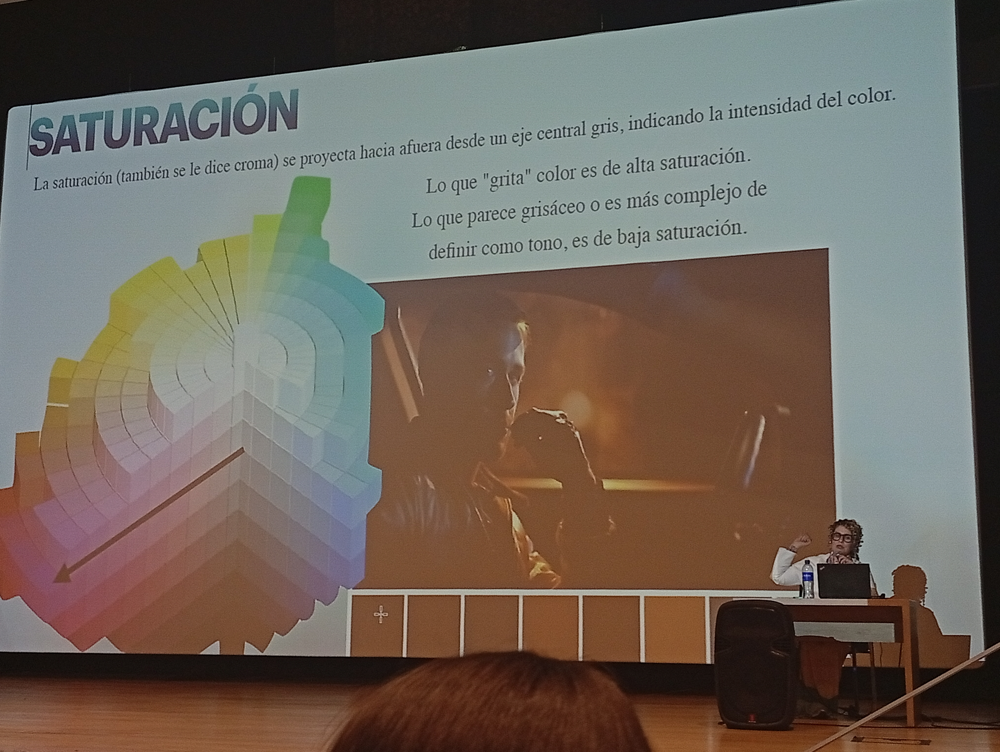
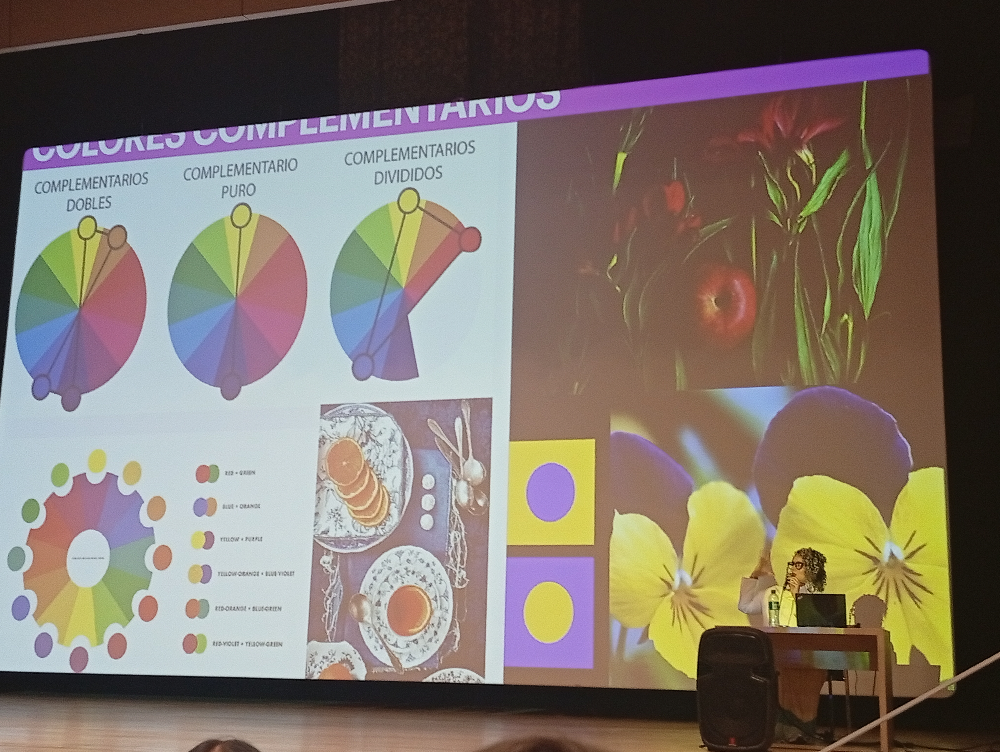
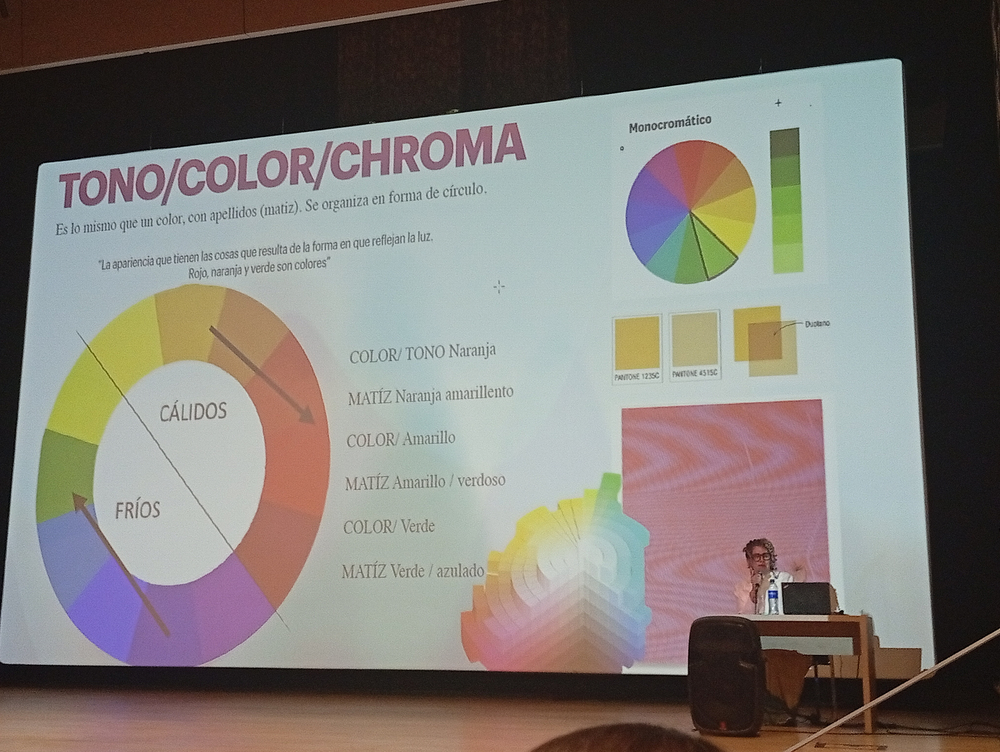

Conferencia de Sara Viloria
Contenido inspirado en la charla impartida por Sara Viloria, Licenciada en Artes Visuales.

Descubre cómo los colores influyen en nuestras emociones, decisiones y forma de percibir el mundo.
Contenido inspirado en la charla impartida por Sara Viloria, Licenciada en Artes Visuales.
Desde las pinturas rupestres hasta las pantallas digitales, el color ha acompañado a la humanidad.


Es la ubicación de un color dentro del círculo cromático.

La saturación representa la intensidad del color.

El cerebro relaciona colores con emociones y recuerdos.

Colores opuestos.
Tres colores equidistantes.
Colores vecinos.
Variaciones del mismo color.

Las preferencias por ciertos colores nacen de nuestras experiencias, recuerdos y personalidad.


